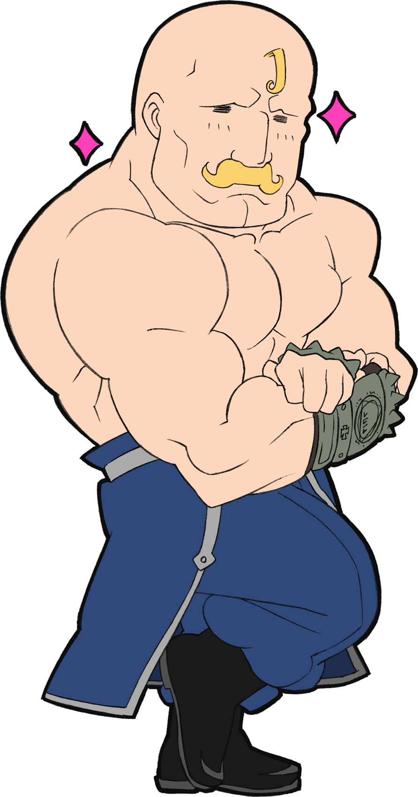

Alex L. Armstrong

- Anime: Fullmetal Alchemist series(2003/2009)
- Manga: Fullmetal alchemist (2002)
- Height: 212cm (6'9)
- Birthday: Aug 8th [1881]
- Family:
Philip Gargantos Armstrong (father),
Unnamed mother,
Olivier Mira Armstrong (eldest sister).
Amue Armstrong (second older sister),
Strongine Armstrong (third older sister),
Catherine Elle Armstrong (younger sister).
- Voice Actors: Kenji Utsumi (JAP) Christopher R. Sabat (ENG)